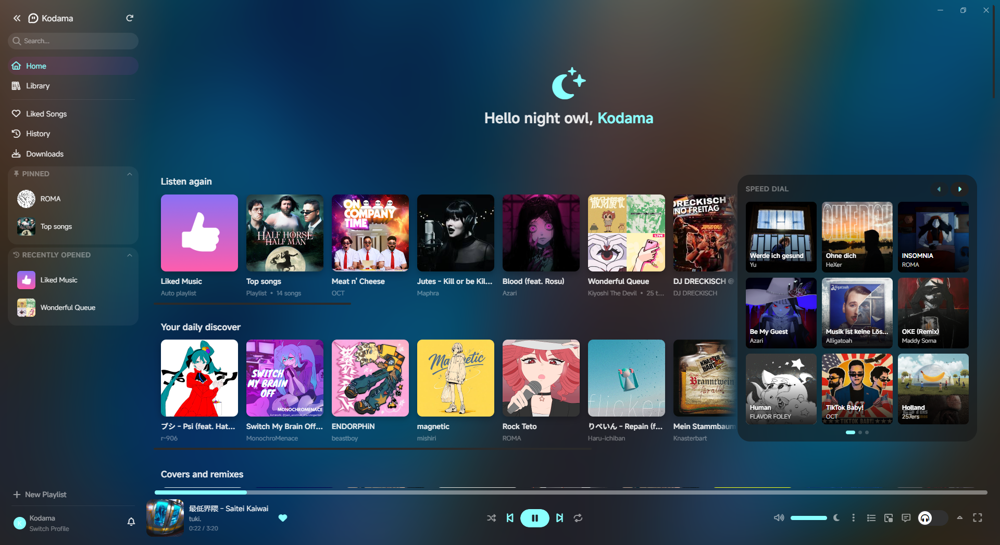
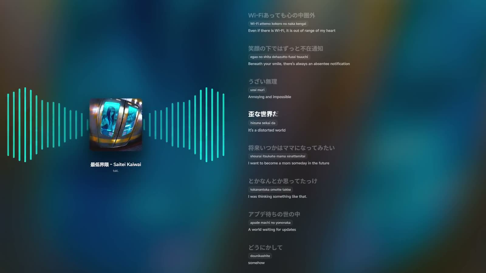

– active this month
·
– downloads
A desktop player for YouTube Music
Synced lyrics, personalization, and more.
Windows & macOS · All versions

Look! Features!
A full-screen now-playing view with a real-time audio visualizer and word-synced lyrics, romaji and translations included.

Synced lyrics
Line, Word- and syllable-level synchronized lyrics, with translations and romaji for Japanese songs
♪ la laAudio visualizer
A reactive, fully customizable visualizer with savable presets.
Overlay for OBS
A dedicated widget to put your now-playing track on stream.
Remote control
Control playback from your phone over your local network.
Personalization
Dynamic accent colors drawn from the cover art, themes, and swappable app icons.
And even more stuff!
Offline downloads, Discord Rich Presence, and Last.fm scrobbling.
Store
Themes, visualizer and equalizer presets, overlay designs and extensions.